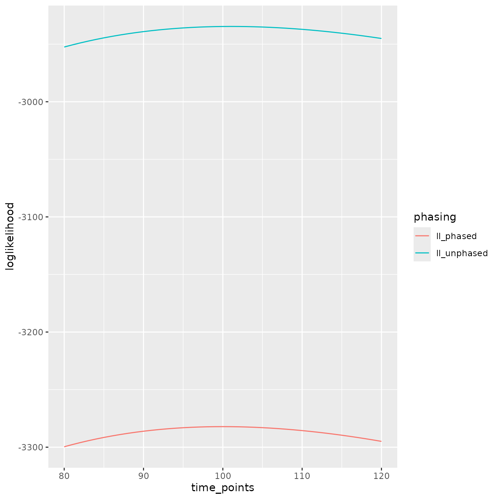

Overview_of_the_junctions_package
Thijs Janzen
5/6/2021
Source:vignettes/Overview_of_the_junctions_package.Rmd
Overview_of_the_junctions_package.RmdOverview of the junctions package
The junctions package has since it’s creation in 2018 been updated with a range of extended functionality, spawning many associated functions. This vignette is aimed at providing a clear overview of the several functions available, and displaying how you can potentially use these functions.
Simulation functions
Because many of the other functions rely on input data, we will first explore functions that simulate such data. These functions simulate the accumulation of junctions in a Wright-Fisher model, with random mating, fixed population size, non-overlapping generations and recombination modeled with the mean number of crossovers drawn from a Poisson distribution with the size in Morgan of the chromosome as the mean of the distribution. The location of the crossovers is drawn from a uniform distribution across the chromosome. In all simulations, only one pair of chromosomes per individual is simulated.
Phased and unphased simulations
These are the most recent additions to the package, where the user can simulate the process of junction accumulation, and the detection of ancestry at a given set of markers. These simulations are designed to reflect the type of data one might get upon sequencing individuals. Simulations aimed more at matching analytical results can be found later on. The data is returned in long data format, and the user can, if required, superimpose phasing inaccuracy or reduced marker coverage.
simulated_pop <- sim_phased_unphased(pop_size = 1000,
freq_ancestor_1 = 0.5,
total_runtime = 100,
size_in_morgan = 1,
markers = sort(runif(n = 1000, 0, 1)),
time_points = seq(0, 100, by = 10))Mathematical simulations
In Janzen et al. 2018, two separate scenario’s were explored: either using a finite or an infinite chromosome, where finite or infinite was referring to the number of junctions possibly spaced on a chromosome. To retain the functionality suggested in that paper, and also to retain the code used for that paper, this functionality is available in the functions and . These functions are aimed at performing stochastic simulations of the accumulation of junctions, and how the placing and spacing of markers affects the detection of such junctions. As such, the simulations return the population average number of accumulated junctions, and the number of detected junctions (given markers, only for the infinite chromosome), but not the actual local ancestry.
junctions_fin_chrom <- sim_fin_chrom(pop_size = 1000,
freq_ancestor_1 = 0.5,
total_runtime = 200,
morgan = 1,
R = 100) # the number of crossover sites
junctions_inf_chrom <- sim_inf_chrom(pop_size = 1000,
freq_ancestor_1 = 0.5,
total_runtime = 200,
morgan = 1,
markers = 100)
plot(junctions_inf_chrom$avgJunctions,
type = "l", lwd = 2,
col = "darkgreen",
xlab = "Time since admixture",
ylab = "Number of junctions")
lines(junctions_fin_chrom$avgJunctions, col = "blue", lwd = 2)
lines(junctions_inf_chrom$detectedJunctions, col = "lightgreen", lwd = 2)
legend("topleft", legend = c("Finite chromosome", "Infinite chromosome",
"Infinite chromosome detected"),
col = c("blue", "darkgreen", "lightgreen"), lty = 1, lwd = 2)
Backcrossing
Lastly, one additional function is available, where instead of random mating, the individuals cross back with one of the parents, as used in Lavretsky et al. 2019. This function also focuses mainly on the average number of junctions and not on the distribution of local ancestry
backcross_result <- sim_backcrossing(population_size = 1000,
freq_ancestor_1 = 0.5,
total_runtime = 20,
size_in_morgan = 1,
number_of_markers = 100)
plot(backcross_result$average_junctions,
type = "l", lwd = 2,
col = "darkgreen",
xlab = "Time since admixture",
ylab = "Number of junctions")Inferring the time since admixture
Junction based methods
Across Janzen et al. 2018 and Janzen & Miró Pina 2022, several equations have been proposed to infer the time since admixture, depending on the data available. Firstly, following equation 14 in Janzen et al. 2018, one can calculate the time since admixture based on the number of junctions detected in one chromosome, given a number of regularly spaced markers:
estimate_time(J = 10, N = 1000, R = 1000, H_0 = 0.5, C = 1)## [1] 20.2909In reality, markers are rarely regularly spaced and the practical applications of equation 14 of Janzen et al. 2018 are limited. Therefore, Janzen & Miró Pina propose an exact method (Equation 3) of calculating the expected number of junctions in a single chromosome, given the distribution of markers across the chromosome.
estimate_time_one_chrom(J = 10, N = 1000, H_0 = 0.5,
marker_distribution = sort(runif(n = 1000, 0, 1)))## [1] 20.5195Local ancestry based methods
Mathematically, the total number of junctions is very tractable, however this discards all the ancestry data collected at the respective markers. Janzen & Miró Pina therefore provide an alternative likelihood based method, that also allows for the joint inference of the time since admixture across data resulting from multiple chromosomes from the same individual. It is assumed here that the individual of interest is haploid, since only data from a single chromosome is available. For the example below, we make use of previously simulated data and pretend that the different chromosomes resulting from different individuals are, in fact, sampled from the same individual. This is of course completely mathematically incorrect, but is used here to demonstrate how to use the functions. The function requires input of a so called ‘ancestry_matrix’, which is a matrix with three columns: 1) chromosome indicator, 2) position on respective chromosome in Morgan and 3) local ancestry. The function returns the maximum likelihood estimate of the time, and the associated likelihood.
ancestry_data <- subset(simulated_pop, simulated_pop$time == 100)
ancestry_matrix <- dplyr::select(ancestry_data, c(individual,
location, anc_chrom_1))
estimate_time_haploid(ancestry_matrix = ancestry_matrix,
N = 1000,
freq_ancestor_1 = 0.5)## $time
## [1] 89.8088
##
## $loglikelihood
## [1] -1517.002If instead, you have diploid ancestry data, you can make use of the function . The function can calculate the ancestry assuming either that the data is phased, or unphased. Below, we take the same data, and add ‘fake’ individual information. We do this, because the function requires an input matrix with the following five columns: 1) individual, 2) chromosome, 3) location along respective chromosome in Morgan, 4) ancestry chromosome 1, 5) ancestry chromosome 2. Please note that in the case of unphased data, it does not matter how ancestry is split out across the two chromosomes. Note that although we are in possession of phasing information (because we are using simulation output), we can ‘fake’ the data to be unphased, in which case the analysis does not take into account phasing information. We can specify the analysis type, which focuses on how the likelihoods are grouped. By default, the likelihood is calculated jointly for all chromosomes within the same individual. Thus, if multiple individuals are provided, multiple time estimates are returned. Instead, one can also specify to group the data by chromosome, jointly optimizing across individuals (not recommended). Lastly, one can specify to split out the data per individual chromosome and provide separate estimates for each chromosome found in each individual.
ancestry_matrix <- dplyr::select(ancestry_data, c(individual,
location,
anc_chrom_1, anc_chrom_2))
ancestry_matrix <- cbind(rep(1, length(ancestry_matrix$individual)),
ancestry_matrix)
t_phased <- estimate_time_diploid(ancestry_information = ancestry_matrix,
analysis_type = "individuals",
phased = TRUE,
pop_size = 1000,
freq_ancestor_1 = 0.5)
t_unphased <- estimate_time_diploid(ancestry_information = ancestry_matrix,
analysis_type = "individuals",
phased = FALSE,
pop_size = 1000,
freq_ancestor_1 = 0.5)
t_phased## # A tibble: 1 × 3
## individual time loglikelihood
## <dbl> <dbl> <dbl>
## 1 1 88.6 -2974.
t_unphased## # A tibble: 1 × 3
## individual time loglikelihood
## <dbl> <dbl> <dbl>
## 1 1 87.4 -2641.We thus find that in this specific case, the time estimate using unphased data is slightly more accurate that the phased case, although they are both close.
Likelihood functions
If we would like to investigate the likelihood profile around the maximum, for instance to assess how accurate our estimate is, we can do so with the respective likelihood functions.
ancestry_matrix <- dplyr::select(ancestry_data, c(individual, location,
anc_chrom_1, anc_chrom_2))
time_points <- 80:120
ll_phased <- log_likelihood_diploid(ancestry_matrix,
pop_size = 1000,
freq_ancestor_1 = 0.5,
t = time_points,
phased = TRUE)
ll_unphased <- log_likelihood_diploid(ancestry_matrix,
pop_size = 1000,
freq_ancestor_1 = 0.5,
t = time_points,
phased = FALSE)
to_plot <- tibble::tibble(time_points, ll_phased, ll_unphased)
to_plot %>%
tidyr::gather(key = "phasing", value = "loglikelihood", -time_points) %>%
ggplot2::ggplot(
ggplot2::aes(x = time_points, y = loglikelihood, col = phasing)) +
ggplot2::geom_line()
Alternatively, we can calculate the haploid log likelihood, e.g. the likelihood of observing the ancestry in one chromosome:
ancestry_matrix <- dplyr::select(ancestry_data, c(individual, location,
anc_chrom_1))
ll_haploid <- log_likelihood_haploid(ancestry_matrix,
N = 1000,
freq_ancestor_1 = 0.5,
t = time_points)
plot(ll_haploid ~ time_points, type = "l",
xlab = "Time since admixture",
ylab = "Loglikelihood")
Expected number of junctions
Mathematically, one can calculate the expected number of junctions. The first equation covered here covers the derivations obtained in Janzen et al. 2018:
number_of_junctions(N = 100, R = 100, H_0 = 0.5, C = 1, t = 1000)## [1] 33.33332This equation however, has to assume that the markers are equally spaced, that is, that the distance between each consecutive marker pair is equal. This is rarely the case in empirical data, and a better version is provided by the function :
number_of_junctions_markers(N = 100, H_0 = 0.5, t = 1000,
marker_distribution = sort(runif(100, 0, 1)))## [1] 27.16975Similarly, we can calculate the probability of observing a junction in between two markers, given an amount of recombination (in Morgan) between these two markers:
number_of_junctions_di(N = 100, H_0 = 0.5, t = 1000, di = 1e-5)## [1] 0.0009914297Lastly, we have included a function that calculates the expected number of junctions after a number of generations, in a backcrossing mating scheme.
number_of_junctions_backcross(H_0 = 0.5, C = 1, t = 10)## [1] 0.009765625Mathematical expressions
Following Janzen et al. 2018, there are a number of equations that might be useful. Firstly, there is an equation to calculate the upper limit of junctions that can be packed in a chromosome, given the number of (regularly spaced) markers:
calc_k(N = 1000, R = 1000, H_0 = 0.5, C = 1)## [1] 333.3333Any time spent after the population has reached this upper limit remains “invisible” for inference purposes, and thus it can be useful to calculate the upper limit of age inference, coined ‘Maximum Accurate Time’, following equation 15 in Janzen et al. 2018:
calculate_mat(N = 1000, R = 1000, H_0 = 0.5, C = 1)## [1] 3869.857Similarly, we can estimate the error induced in time inference, where the error is given by the amount of time difference induced if we were to infer one junction less (or more), following Equations 3 & 4 in the Supplementary information of Janzen et al. 2018.
time_error(t = 30, N = 1000, R = 1000, H_0 = 0.5, C = 1)## [1] 0.0697948This concludes a runthrough of all the available functions in the junctions package. Feel free to contact me if you feel anything is missing, or to create an issue if you run into a problem.